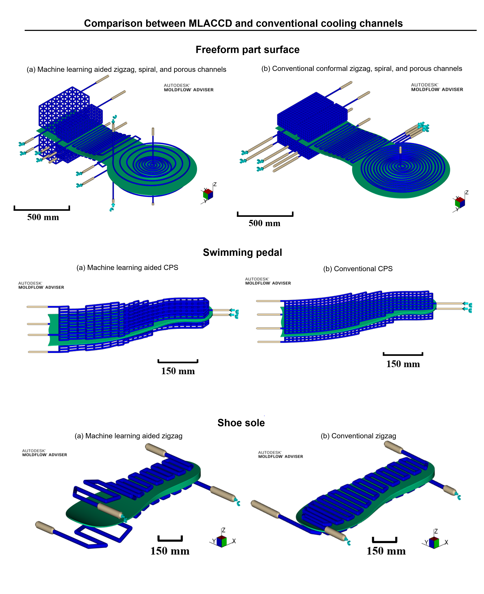

Validation Case Studies
Some of the case studies are chosen to validate the result of the software, where all related work can be found in the these publications:
[1] Z. Gao, G. Dong, Y. Tang, Y. Zhao. Machine learning aided design of conformal cooling channels for injection molding. ASME. Journal of Mechanical Design. (In Press)
[2] Z. Gao, Y. Zhao. Machine learning aided design and optimization of conformal porous structure. IDETC-CIE 2020.
[3] Z. Gao, Y. Zhao. Machine learning aided optimization of conformal cooling channels for injection molding. HI-AM Conference 2019.
